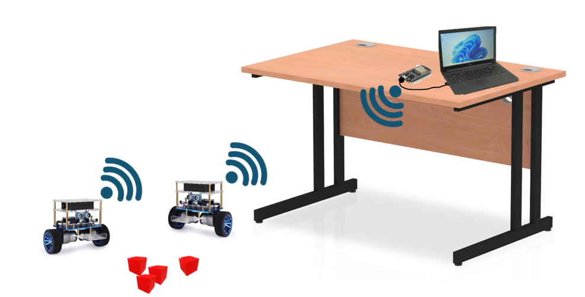
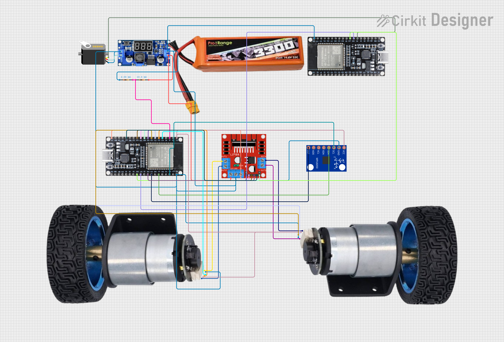
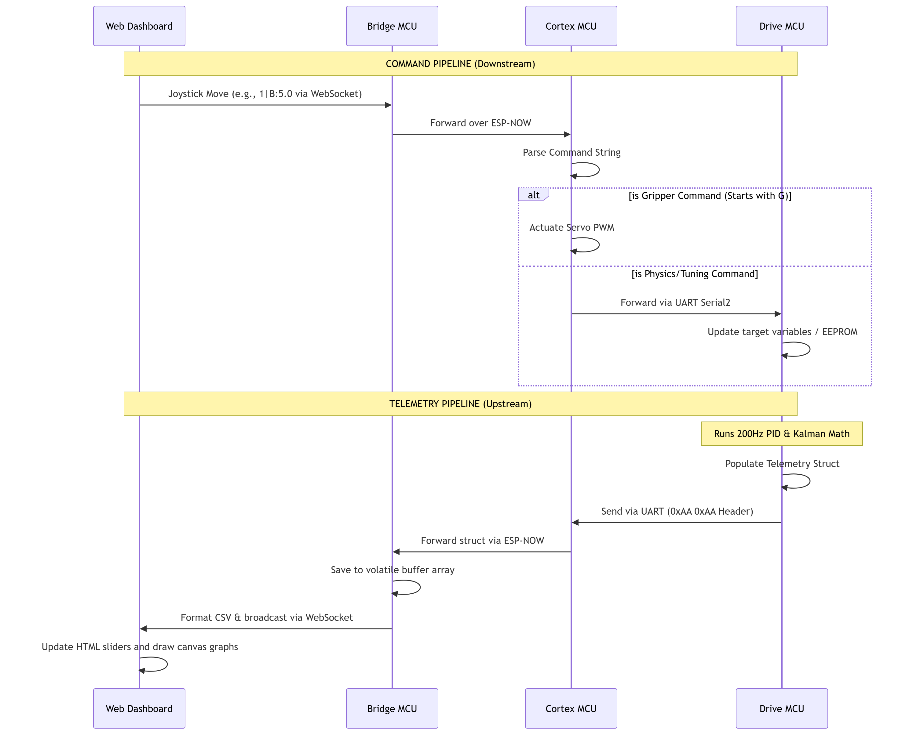
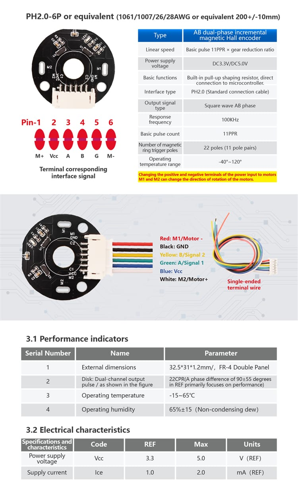
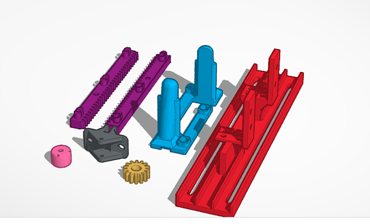
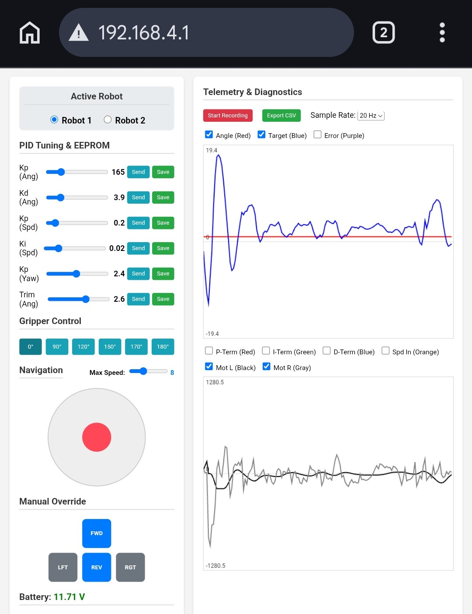
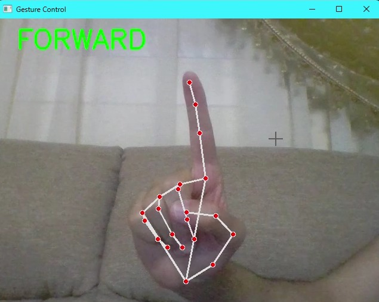
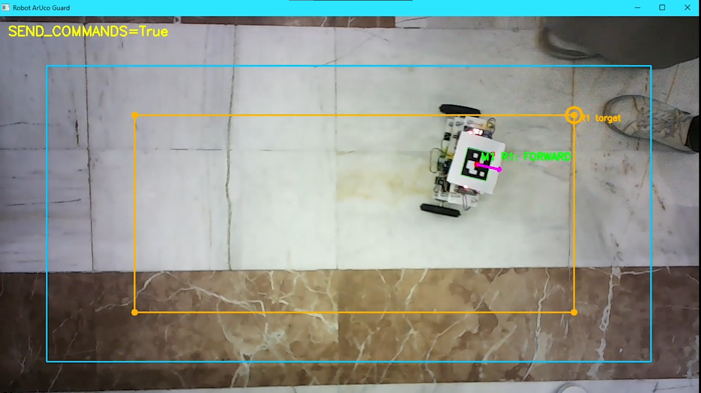
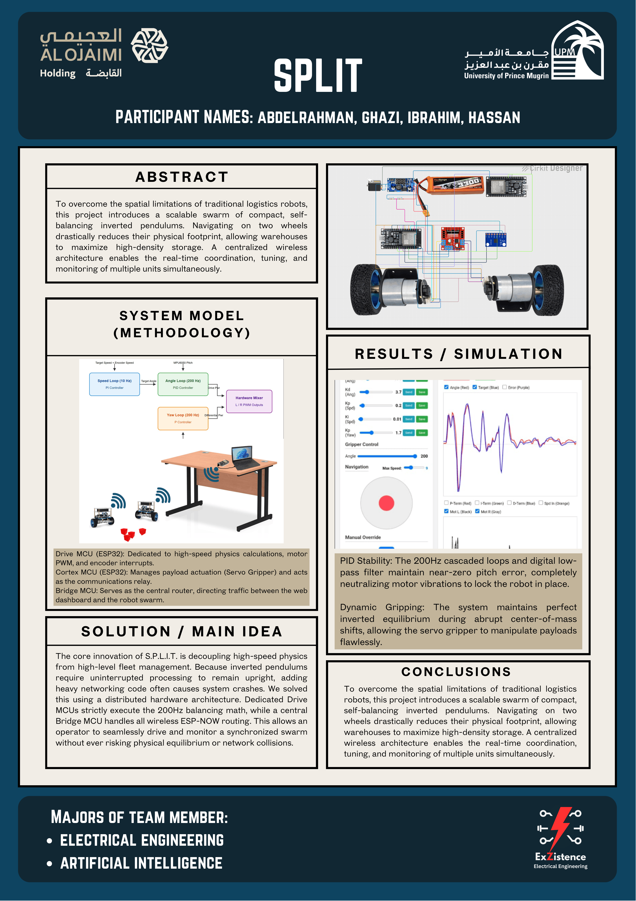

Project S.P.L.I.T.
Snapping Pendulums Literally In Two
Overview
Modern warehouse facilities face a critical spatial bottleneck: traditional four-wheeled logistics robots require massive floor space and wide aisles to maneuver safely. To solve this, my research group at the University of Prince Mugrin (UPM) fully designed, programmed, and constructed Project S.P.L.I.T., a highly advanced, self-balancing robotic swarm architecture.

By navigating exclusively on two wheels as an inverted pendulum, these robots drastically reduce their physical footprint. This allows industrial facilities to narrow their aisles and maximize high-density storage without sacrificing payload capacity.
The Multidisciplinary Challenge
This was not a simple plug-and-play assembly. Developing a robotic swarm that can carry shifting payloads requires absolute mathematical precision and high-speed data processing. We had to seamlessly blend electrical engineering, complex control theory, and cutting-edge artificial intelligence into a functional, industry-ready prototype.
- Hardware Modularization: Utilizing distributed ESP32 microcontrollers to decouple physics processing from network management.
- Dynamic Stability: A custom 200 Hz cascaded PID control system executing real-time sensor fusion.
- Computer Vision: Eliminating traditional controllers in favor of interactive, OpenCV-powered hand gesture teleoperation.
Distributed Hardware Architecture: The Dual-MCU Paradigm
One of the most fatal flaws in DIY robotics is asking a single microcontroller to handle both high-speed physics calculations and heavy wireless network routing. When a processor pauses for just a few milliseconds to process a Wi-Fi packet, a balancing robot will miss a sensor reading and violently crash to the floor.
To solve this, we decoupled the processing load using a Distributed Dual-MCU Architecture on each robot, governed by a central Bridge router:

The finalized hardware: Drive MCU (bottom) and Cortex MCU (top) stacked on the 3D-printed chassis.
- The Drive MCU (Physics Engine): An ESP32 dedicated entirely to survival. Its Wi-Fi radio is physically disabled via code to free up hardware interrupts. It reads the MPU6050 IMU via I2C, tracks the quadrature encoders, and executes the 200 Hz balancing math.
-
The Cortex MCU (The Brain): A secondary ESP32 that
handles payload actuation (the servo grippers) and acts as the
communications relay. It talks to the Drive MCU via a blazing-fast
500,000 baud hardware UART connection, using a custom
0xAA 0xAAbyte header system to prevent data corruption. - The Bridge MCU (The Router): A central hub plugged into the control station. It hosts a local Wi-Fi Access Point and Web Server via SPIFFS, and routes traffic to the robot swarm via the ultra-low-latency ESP-NOW protocol.
Node Communication Topology

Sequence diagram detailing the downstream command routing and upstream 200Hz telemetry flow.
Hardware & Actuation
The brains of S.P.L.I.T. rely on the ESP32 Microcontroller. Operating with a dual-core processor clocked at 240 MHz, it provides a massive computing upgrade over standard 16 MHz Arduino boards. This high clock speed is exactly what allowed our Drive MCU to easily sustain a 200 Hz PID loop frequency while simultaneously reading hardware interrupts from the wheel encoders.
For locomotion, we utilized 12V DC Gear Motors (JG37-520), with 10kRPM reduced with 1:30 gear ratio to 333RPM,driven by an H-Bridge L298N motor controller. These motors were selected for their integrated magnetic quadrature encoders, which provide the high-resolution position feedback required for the secondary speed/position PID loop. We push the PWM frequency to 5000 Hz with 8-bit resolution to ensure completely silent and buttery-smooth motor acceleration, eliminating the high-pitched whine common in lower-frequency robotics, though it wasn't 100% eliminated (just sounded better than the 1khz - trying it was fun - to her electricity like in transformers).
To measure the tilt of the robot, we implemented the MPU6050 6-axis IMU. We specifically bypassed the onboard DMP (Digital Motion Processor) because it introduces processing delays. Instead, we pulled the raw accelerometer and gyroscope data via a 400kHz I2C bus and ran it through our own mathematically optimized Kalman filter on the ESP32.
For payload manipulation, we needed a mechanism that moved linearly without throwing off the robot's center of mass. We utilized a Rack and Pinion Servo Gripper driven by a high-torque MG995/DS5160 servo. The brilliant foundational design for this parallel jaw movement was created by PapaBravo on Thingiverse. We imported his STL files into Tinkercad, heavily adapting and scaling the design to securely mount to our specific chassis and handle larger payloads.



Control Theory: Taming the Inverted Pendulum
Keeping a two-wheeled robot upright is a classic control theory problem. Because the center of mass sits high above the wheel axis, the system is naturally unstable. To maintain equilibrium, we implemented a Cascaded PID (Proportional-Integral-Derivative) Controller.
The system relies on three simultaneous control loops working in harmony:
- The Inner Angle Loop (200 Hz): The fastest loop. It calculates the difference between the robot's current tilt (derived from a Kalman filter) and the target angle, outputting raw PWM signals to the motor drivers to prevent falling.
- The Outer Speed/Position Loop (10 Hz): Reads the high-resolution wheel encoders. If the robot drifts from its target position, this loop calculates an error and slightly shifts the Target Angle of the inner loop. The robot leans forward to catch itself, naturally driving it to the correct location.
- The Yaw Loop (200 Hz): Reads the Z-axis gyroscope to ensure the two motors spin in perfect synchronization, preventing the robot from unintentionally spinning out of control during rapid accelerations.
Rather than relying on the MPU6050's built-in DMP (Digital Motion Processor)—which introduces unwanted latency—we process the raw accelerometer and gyroscope data directly through our own programmed Kalman Filter. This allows us to optimally fuse the data, filtering out high-frequency motor vibrations while correcting long-term gyroscope drift.
Wireless Swarm Telemetry & Control Dashboard
Tuning a cascaded PID controller requires extreme patience. Hardcoding values and flashing the ESP32 takes 30 seconds per attempt. To solve this, we built a comprehensive telemetry dashboard hosted entirely on the Bridge MCU's SPIFFS memory.

The custom HTML/JS Web App serving real-time 200Hz telemetry graphs via WebSockets.
By connecting a phone or laptop to the Bridge MCU's local Wi-Fi network, operators can access a responsive interface to:
- Live Tune PID Values: Adjust Kp, Ki, and Kd parameters on the fly with sliders. The values are instantly updated in the robot's RAM and saved to the Drive MCU's non-volatile EEPROM for permanent storage.
- Monitor Diagnostics: View real-time, auto-scaling graphs of the robot's pitch angle, motor output, and error terms plotted over time, updating at up to 20 frames per second.
- Manual Swarm Override: Seamlessly take manual control of individual robots using an on-screen joystick or D-pad, and actuate the 3D-printed servo grippers to pick up payloads dynamically.
Computer Vision & Hand Gesture Teleoperation
While the internal PID loops keep the robots balanced, navigating them effectively through a warehouse requires spatial awareness. Because onboard cameras would shift the center of mass and overwhelm the microcontrollers, we offloaded the vision processing to an external global system running on a laptop.
By mounting an overhead camera, a Python script running OpenCV acts as the "Eye in the Sky." Each robot is equipped with a distinct ArUco marker. The Python script detects these markers in real-time, instantly calculating the robot's exact X/Y coordinates and its Yaw (heading direction) to generate automated routing commands.
To push the teleoperation further, we integrated a secondary OpenCV module utilizing MediaPipe Hand Tracking. By mapping the 21 3D landmarks of a human hand, the system translates physical hand gestures (like pointing forward or swiping left) into direct kinematic commands. These commands are serialized and blasted over the ESP-NOW network, allowing operators to literally direct the swarm with the wave of a hand.


Autonomous Navigation Demo
Conclusion & System Validation
Project S.P.L.I.T. successfully demonstrated that high-density logistics can be achieved without the spatial penalties of traditional four-wheeled rovers. By aggressively optimizing the 200 Hz cascaded loops and applying a digital low-pass filter to our sensor data, we achieved near-zero pitch error, completely neutralizing motor vibrations to lock the robots in place.
Furthermore, the dynamic gripping system proved that a self-balancing inverted pendulum can maintain equilibrium during abrupt center-of-mass shifts, allowing the servo grippers to manipulate payloads flawlessly without tipping over.

Reflections & Future Improvements
Building a distributed-architecture swarm robot in just two weeks forced us to make some aggressive compromises. If we were to design a "V2" of this system, here is exactly what we would do differently:
- Custom PCB & Grounding: Wiring everything with jumper cables created a massive grounding headache, which occasionally caused our I2C bus to freeze and crash the MPU6050. A custom-printed PCB would eliminate the wire spaghetti and drastically improve electrical stability.
- Modern Motor Drivers & Actuation: The L298N motor driver is an archaic, inefficient dinosaur that loses a lot of voltage as heat. We would upgrade to a modern MOSFET-based driver. We also want to experiment with Stepper Motors or low-KV BLDC motors to provide the massive low-end torque needed for incline balancing.
- Power Management: Our current battery drained incredibly fast under the load of the dual ESP32s and motors. We need a larger capacity pack and a dedicated hardware protection circuit to prevent the LiPo batteries from dangerous over-discharging.
- Processing Power: We would upgrade the core brains from the standard ESP32 to the newer ESP32-S3 or S2 for faster floating-point math and better memory allocation.
- Mechanical Chassis: While the threaded rods and acrylic plates worked for prototyping, a fully custom 3D-printed unibody chassis would be much more rigid and less prone to vibration resonance.
- The Original "S.P.L.I.T." Vision: Due to the two-week time limit, we had to scrap our original mechanical mechanism—a system where the two robots would magnetically dock back-to-back to form a heavy-lifting 4-wheel rover, and then literally "split" apart using a 3D-printed scissor mechanism to do micro-deliveries. This remains our ultimate goal for the swarm.
Acknowledgements
This project would not have been possible without the relentless late nights, debugging sessions, and brilliant engineering of my teammates at the University of Prince Mugrin.
A massive thank you to my fellow Electrical Engineering colleagues, Ibrahim Albarbari and Ghazi Alhartani, for tackling the rigorous hardware and control theory challenges, and to our Artificial Intelligence specialist, Hassan Nasr, for elevating the swarm's logic and vision capabilities. We built something truly incredible together.